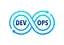

Practical DevOps & Linux Learning Platform
Learn DevOps the real-world way — monitoring, automation, CI/CD, reliability engineering, and operational thinking

Linux HealthCheck
CPU, memory, disk, network, and process monitoring
Application Health
Service uptime, logs, dependencies, and errors
Lightweight Automation
Lightweight Automation and CI/CD triggers

DevOps Learning Sessions
Step-by-step DevOps tutorials covering CI/CD, automation.
Practical DevOps & Linux Learning Platform.
EZDevOps ThinkCentre is a practical learning platform for DevOps engineers, Linux administrators, and cloud practitioners who want to understand how real production systems work.
The platform focuses on real-world operational knowledge such as Linux system health checks, monitoring and observability, CI/CD pipelines, automation, and incident responsiveness. The goal is to help learners build strong foundational skills that are actually used in day-to-day engineering roles.
All content is designed for beginners to intermediate professionals and is presented in a structured, easy-to-follow format based on real operational scenarios rather than theory alone.
Platform Vision
At its core, EZDevOps ThinkCentre was created to fill a gap in traditional technical education. Most learning resources introduce tools—Git, Jenkins, Docker—without explaining how those tools behave in real production conditions. The vision here is to teach operational thinking: how systems behave under load, how failures propagate, how dependencies interact, and how to recover reliably and predictably when issues arise.
This platform encourages learners to shift their mindset from tool‑centric to system‑centric. Instead of memorizing commands, engineers learn how to analyze signals that indicate system health or failure. Instead of following tutorials blindly, learners build a mental model of how infrastructure components interact, what kinds of failures are possible, and which metrics truly matter for proactive maintenance.
To achieve this vision, content here is not just long text. It is structured explanations, real outputs, annotated logs, performance patterns, and scenario explanations that help translate theory into everyday operational reasoning. Over time, learners will spend less time debugging and more time improving reliability.
This philosophy applies not just to monitoring and troubleshooting, but to all DevOps practices taught here: automation, continuous integration, deployment strategies, standard operating procedures, performance analysis, and much more. You’ll learn the why and the when — not just the how.
Linux Infrastructure
Linux is the most widely used operating system in server environments, cloud infrastructure, container hosts, CI/CD runners, and edge devices. Understanding Linux internals is not optional for DevOps professionals — it is foundational. This section dives into why this is true and how to build practical expertise.
At the core of Linux is the kernel — the part that interacts directly with hardware. The kernel manages processes, memory allocation, I/O operations, and system calls from applications. To understand performance, engineers must learn how the kernel schedules processes, how memory is shared and swapped, and how I/O is prioritized under load.
Process scheduling determines how CPU time is allocated across running tasks. Under normal conditions, the scheduler ensures responsiveness. Under heavy load, however, processes can starve or compete aggressively for CPU shares. Recognizing this pattern by watching metrics such as run queue length, context switch rates, and CPU steal percentages informs decisions like scaling out workloads or optimizing code.
Memory management is another area that beginners often misunderstand. Linux uses free memory aggressively for caching to improve performance. This can cause naive observers to conclude “memory is full,” even when the system is healthy. Learning to interpret cache, buffer, and swap usage correctly helps differentiate between expected behavior and a memory pressure situation that needs eviction or application reconfiguration.
Disk I/O is often the bottleneck in real systems. Metrics like IOPS (I/O operations per second), average wait times, and queue lengths reveal hot spots. Engineers must understand when to provision faster storage, when to rebalance workloads, and when to introduce caching layers or CDNs for improved throughput.
Networking on Linux involves interfaces, routing tables, firewall rules, and kernel buffers. Latency, dropped packets, and retransmissions can be symptoms of congestion upstream or misconfigured routes. Tools such as netstat, ss, and ip provide visibility into active connections and port states. Advanced tools like tcpdump help diagnose deeper packet-level issues.
Monitoring & Observability
Monitoring is the foundation of operational awareness. Without visibility into system behavior over time, teams react to incidents instead of preventing them. Good monitoring captures metrics, logs, and traces that reveal patterns — both healthy and anomalous.
Metrics, such as CPU usage, memory pressure, disk I/O, network throughput, and load averages, should be collected, stored, and visualized over time. Time-series databases such as Prometheus or InfluxDB are commonly used to store this data. Dashboards built with Grafana help humans interpret trends and set thresholds for alerting.
Alert fatigue is a real problem. Too many alerts without context cause engineers to ignore notifications. The platform teaches how to define meaningful alerts: those that signify actionable conditions. Instead of alerting on raw thresholds, alerts should represent meaningful deviations from expected baselines or combinations of symptoms that indicate real problems.
Logs provide a narrative of what happened. Structured logs, correlation IDs, and contextual metadata enable efficient troubleshooting. The platform shows how log aggregation tools such as Elasticsearch, Logstash, and Kibana (ELK stack) or Fluentd and Graylog can help uncover root cause when combined with metric spikes and alert histories.
Traces represent distributed transaction paths through microservices. They are essential in modern distributed systems to understand where latency or errors occur. Tools like Jaeger and Zipkin capture spans and help pinpoint performance bottlenecks across services.
Application Reliability
Application reliability depends on both the application code and the environment it runs in. This section explores patterns that improve reliability and resilience in real systems.
Resilience patterns such as retries with exponential backoff, circuit breakers, bulkheads, and graceful degradation help applications withstand transient failures without catastrophic system impact. The platform includes practical examples and scenarios where these patterns are applied in real workloads.
Error budgets and SLOs (Service Level Objectives) are important operational constructs. They help balance velocity and reliability by quantifying acceptable failure rates and guiding where engineering focus should be applied to improve outcomes.
Web Server & User Experience
Web servers are the gateway to users. Ensuring low latency, high throughput, and error minimization correlates directly to positive user experience. Tools like NGINX and Apache remain essential components in modern operational stacks.
Performance optimizations such as compression, caching, connection pooling, and TLS tuning reduce server load and improve latency. The platform demonstrates real examples of configuring these settings and interpreting performance metrics under load.
CI/CD & Jenkins
Continuous Integration and Continuous Delivery (CI/CD) accelerate delivery but must be reliable. Jenkins pipelines should be modular, testable, and observable. Each stage should provide logs and feedback so failures can be diagnosed quickly.
Rollbacks, artifact versioning, and job isolation strategies are covered with practical scripts and explanations that help developers and operators maintain confidence in automated workflows.
Standard Operating Procedures (SOPs)
SOPs document consistent operational tasks so teams can execute reliably under pressure. Templates, checklists, and examples help learners create meaningful SOPs that reduce errors and improve reproducibility during incidents.
Real-World Learning Philosophy
The best learning comes from doing. Lab environments, simulated outages, game days, and practice drills help internalize concepts. This platform includes guidance for setting up local labs and running controlled tests.
Who Benefits from This Platform
Whether you are a novice starting with Linux, an engineer transitioning to DevOps, or an experienced operator improving reliability, this platform provides layered insights to help you grow.
Long-Term Value
Long-term success in DevOps comes from continuous improvement, feedback loops, and community learning. This section ties together all lessons into a strategy for ongoing career growth.